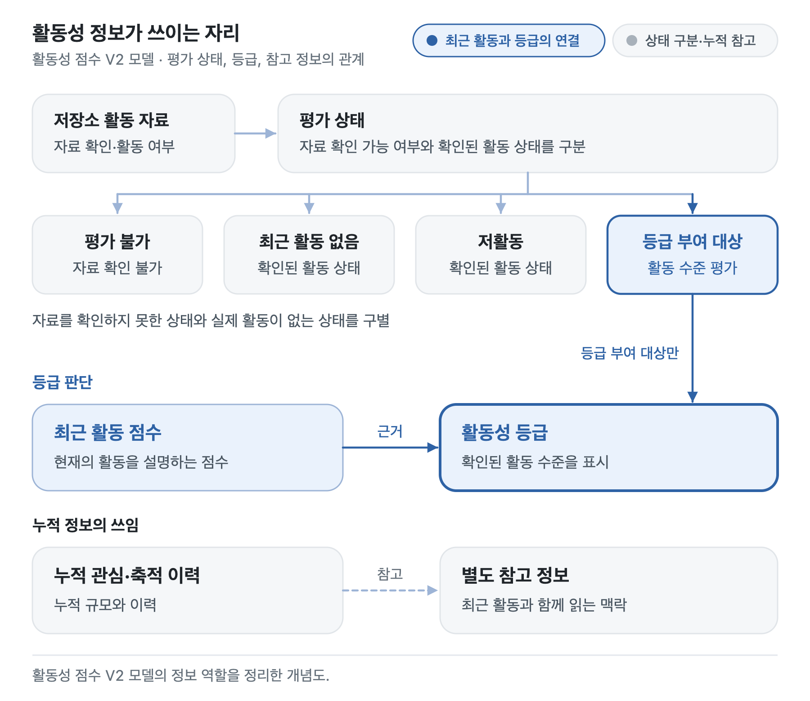
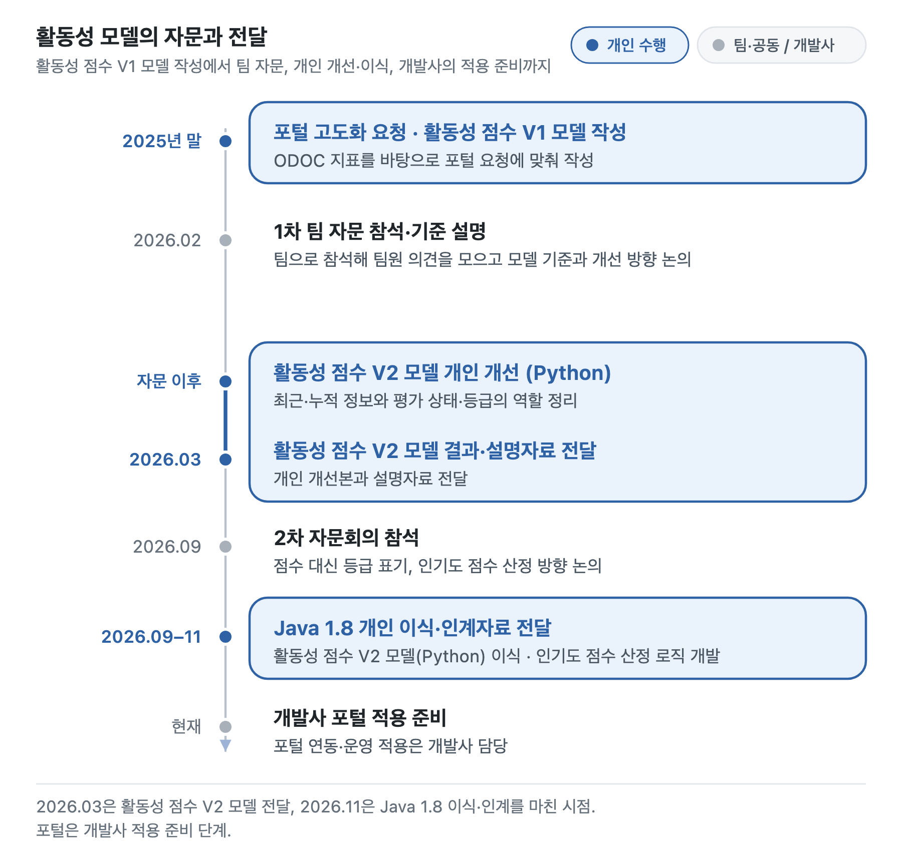

외부 자문에서 개인 개발·인계까지
포털 활동성 모델
최근 활동과 누적 정보,
평가 상태와 등급을 구분하는 점수 모델
정보통신산업진흥원(NIPA) 오픈소스포털의 고도화 요청을 받아 ODOC 활동성 지표를 바탕으로 활동성 점수 V1 모델을 만들었습니다. 팀 자문 뒤에는 자문 의견에 맞춰 활동성 점수 V2 모델(Python으로 개발)로 개인 개선했고, 개발사의 후속 의뢰로 Java 1.8로 이식하고 인기도 점수 산정 로직을 개발해 결과물·인계자료를 전달했습니다.
맡은 일과 결과
팀 대표로 자문에 참석해 모델 기준을 설명했습니다.
포털 요청을 받아 활동성 점수 V1 모델을 만들었습니다. 자문 뒤 활동성 점수 V2 모델로 개선해 3월에 전달했고, 후속 개인 용역으로 Java 1.8 이식과 인기도 점수 산정 로직 개발, 인계자료 전달까지 수행했습니다.
Java 이식·자료 전달은 완료했습니다. 포털 연동·운영 적용은 개발사가 준비 중입니다.

01 · 평가 기준
점수의 뜻을 분명히 한 평가 기준
활동성을 점수로 보여 주려니 어떤 항목을 왜 평가하는지 설명할 근거가 필요했습니다. 논문과 오픈소스 재단의 기준을 찾아보고 팀원·연구실 구성원과 논의했습니다.
활동성 점수 V1 모델의 기준
포털의 요청으로 ODOC 활동성 지표를 고쳐, Star·누적 커밋 같은 규모보다 지금 관리되고 있는지를 보도록 했습니다. 2026.02 자문회의에서 이 기준을 설명했습니다.
- 프로젝트 나이 보정커밋·이슈·PR을 프로젝트 나이로 나눠, 오래된 프로젝트가 저절로 유리해지지 않게 했습니다.
- 최근 활동최근 30일 활동에 가중치를 두고, 31–90일 활동은 영향을 줄였습니다.
- 활동 일관성최근 3개월 활동의 변동계수로, 한 시점에 몰린 활동보다 꾸준한 관리를 높게 봤습니다.
- Star인지도 지표로만 쓰고, 로그 변환과 낮은 가중치로 영향을 줄였습니다.
- 등급점수와 함께 S·A·B·C·Iron 등급을 제안했습니다. 이때는 활동이 없는 경우와 자료를 확인하지 못한 경우가 모두 Iron에 들어갔습니다.
프로젝트 나이·Star 수와 점수의 관계, 등급 분포를 그림으로 그려 살폈습니다.
자문 뒤 활동성 점수 V2 모델에서 바꾼 것
자문 의견을 검토해 최근 활동과 누적 정보의 역할을 정리했습니다. 자료를 확인하지 못한 경우가 활동이 적은 경우로 읽히지 않도록 평가 상태와 등급도 구별했습니다.
- 최근 활동등급을 정할 기준으로 살폈습니다.
- 누적 정보함께 읽을 수 있는 참고 정보로 구분했습니다.
- 평가 상태자료를 확인할 수 있는지 구별했습니다.
- 등급확인된 활동 수준을 표시했습니다.
02 · 자문·개선·후속 의뢰
활동성 점수 V1 모델 작성에서 Java 1.8 이식까지

- 2025년 말
포털 고도화 요청을 받아 활동성 점수 V1 모델을 만들었습니다.
- 2026.02
팀 대표로 1차 포털 자문회의에 참석해 발표자로 모델 기준을 설명했습니다.
- 2026.03
개인적으로 개선한 활동성 점수 V2 모델의 결과와 설명자료를 전달했습니다.
- 2026.09
2차 자문회의에서 점수 대신 등급으로 표기하고, 인기도 점수를 따로 내는 방향을 논의했습니다.
- 2026.09–11
후속 개인 용역으로, 개발사 환경에 맞춰 활동성 점수 V2 모델의 Python 코드를 Java 1.8로 이식하고, 인기도 점수 산정 로직을 개발해 결과물·인계자료를 전달했습니다.
사용 기술
- 모델 개발
- Python
- 이식
- Java 1.8
Python 코드를 Java로 옮기고 검토했습니다. 이전 Python 계산 결과와 비교해 Java 로직을 확인했고, Java 1.8 환경에서 동작하는지도 확인했습니다.
개발사 담당 · 포털 연동·운영 적용 준비
최근 90일 활동과 일관성은 기존 모델에도 반영돼 있었습니다. 활동성 점수 V2 모델의 변화는 서로 다른 정보와 평가 상태가 맡는 역할을 구분한 것으로 설명합니다. 외주 계약·코드·세부 검증 자료는 공개하지 않습니다.